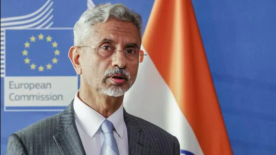
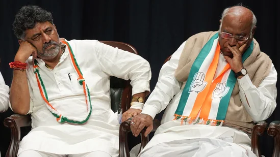

On EU official call against India over Russian oil, Jaishankar’s blunt response
India, one of the biggest buyers of Russian crude, ships refined fuel produced from the crude to European states
External affairs minister S Jaishankar addresses the media during a press conference on the EU-India Trade and Technology Council at EU headquarters in Brussels (AP)
NEW DELHI: India has pushed back against a suggestion by a top European Union (EU) official for a crackdown on Russian oil resold by Indian firms as refined fuels, with external affairs minister S Jaishankar saying such exports don’t violate EU regulations.
DK Shivakumar wants ‘all or nothing’, asks what Siddaramaiah did in 3 yrs: Sources. 10 updates on Karnataka CM race
 Congress president Mallikarjun Kharge with Karnataka Congress president DK Shivakumar.(PTI)DK Shivakumar has made clear to the Congress brass that he was not ready for the Karnataka deputy chief minister post. Even as hectic parleys over Karnataka's new chief minister continue on Wednesday, days after the Congress's thumping victory in the assembly election, the party's state president DK Shivakumar has made clear to the Congress brass that he was not ready for the deputy chief minister post and “insisted on all or nothing”, sources familiar with the development said.
Pilots seek government's help to quit Go First, sidestepping notice periods
Many Go First pilots have been looking for new jobs in light of the crisis and in early May flocked to a hotel for walk-in interviews organised by Air India. Pilots at India's Go First face delays getting paid due to the airline's bankruptcy process and want the government to allow them to take up new jobs without serving long notice periods, a group representing the pilots said in a letter seen by Reuters. The tussle with pilots is the latest headache for Go First, which is also facing a court battle.
Senior Meta India executive Manish Chopra resigns, fourth major exit in 6 months
Chopra, who joined the tech giant in January 2019, was serving as its Director and Head of Partnerships in the country. Manish Chopra, Meta's Director and Head of Partnerships in India, has announced his resignation, making his exit from a company he joined in January 2019.
Sourav Ganguly's security cover upgraded to Z category by West Bengal govt: Report
The decision was taken on Tuesday following the expiry of the tenure of Y category security provided to Ganguly. The West Bengal government has decided to upgrade the security cover of former Indian cricket team captain and ex-BCCI president Sourav Ganguly to Z category, a senior official said.
India reports 1,021 new Covid-19 cases; active infections decline to 11,393
The death toll has increased to 5,31,794 with four more fatalities, including two reconciled by Kerala, the data updated at 8 am stated. India saw a single-day rise of 1,021 Covid infections while active cases have decreased to 11,393 from 13,037 a day earlier, according to Union Health Ministry data updated on Wednesday.
The Kerala Story contains hate speech, West Bengal tells SC in defence of ban
The WB govt told SC in an affidavit that there were multiple scenes in the movie, ‘The Kerala Story’, that have the potential to “hurt communal sentiments”. NEW DELHI: The West Bengal government, which banned the movie ‘The Kerala Story’, has told the Supreme Court that the decision was taken because the film contains “hate speech” and “manipulated facts” which can hurt communal harmony and disturb the law and order situation.